LIFE IN MOTION
Some candid moments and fragments of everyday life.
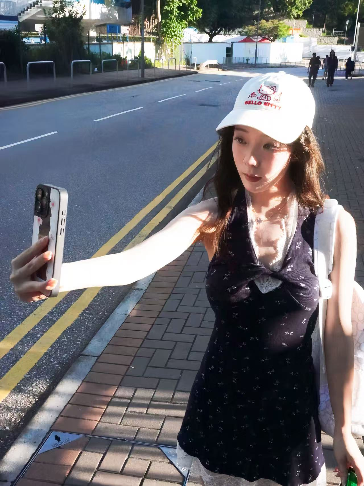
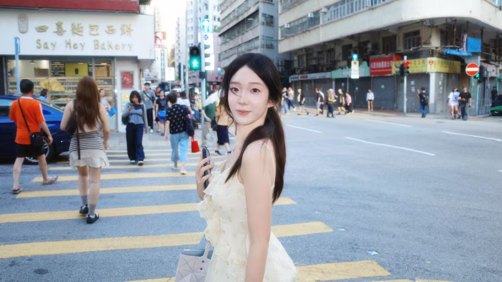
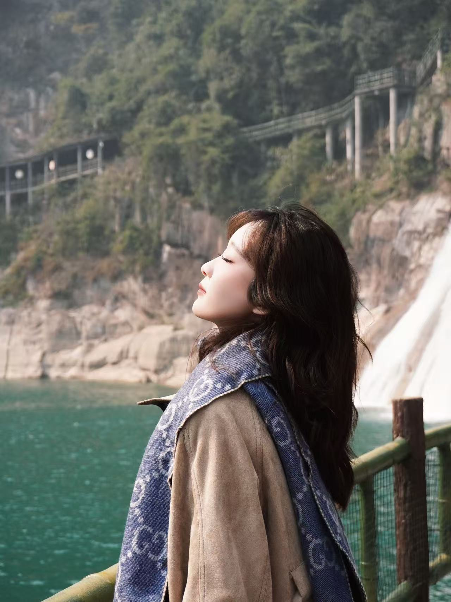
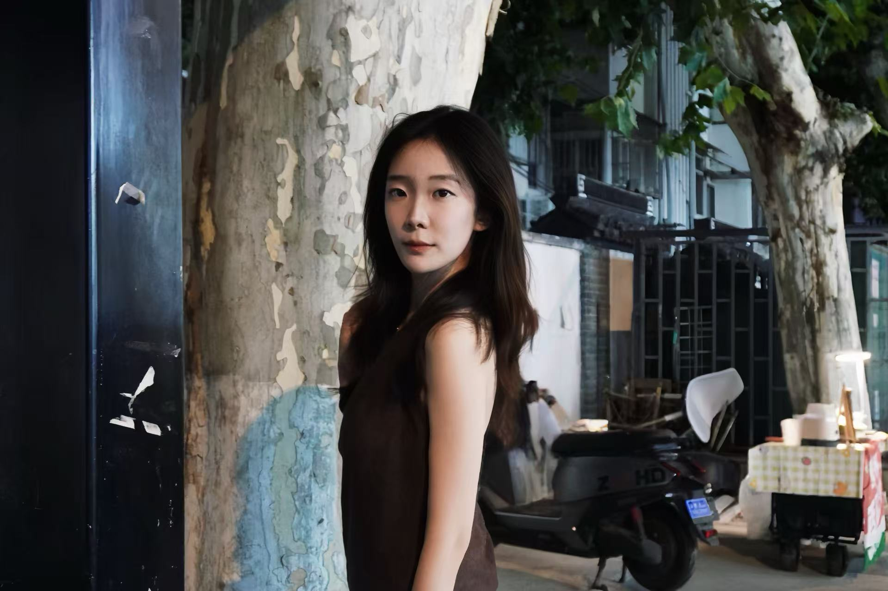
I often feel that because of my ability to sense things, there are too many things that touch me deeply.
The back view of someone holding hands while walking
The sunset reflected in the rearview mirror on my way home from work
A bright yellow streak on the art wall
The moment when leaves spin and fall
A raindrop and a cloud
The days repeat in monotony
But these moments are brand new and filled with happiness
It makes me never feel lonely when being alone.
Instead, it makes me feel fulfilled.
When traveling alone or taking a walk,
I open all my senses.
Everything around becomes astonishing and interesting.
Krishnamurti wrote in "The Tree of Life": Sensation can make the human heart become more acute. Beauty, language, the silence between words, and the awareness of sound - all of these will bring about intense sensations.
Being good at sensing is a very valuable ability.
Strong feelings can give people a very concrete sense of life.
CITIES' MOMENTS, CAPTURED IN FRAMES
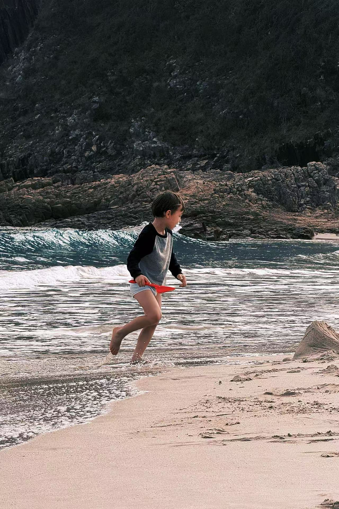
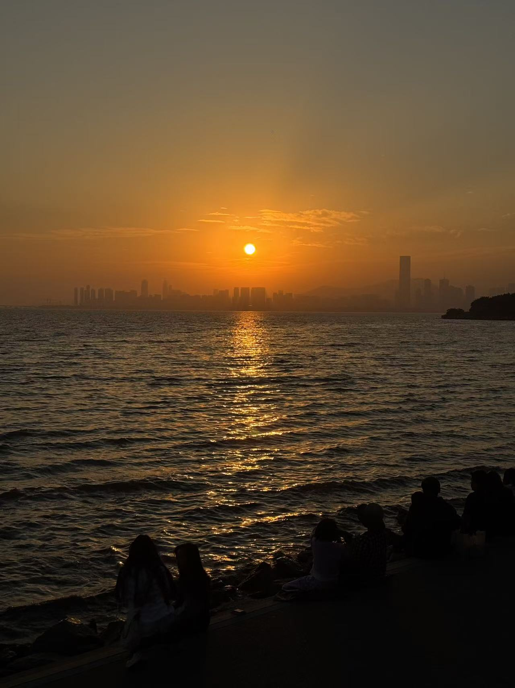
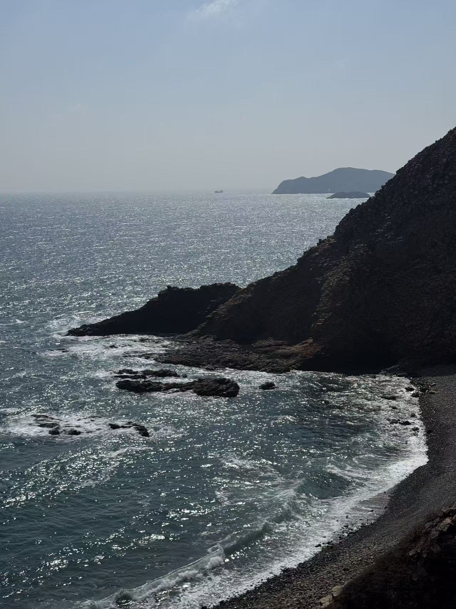
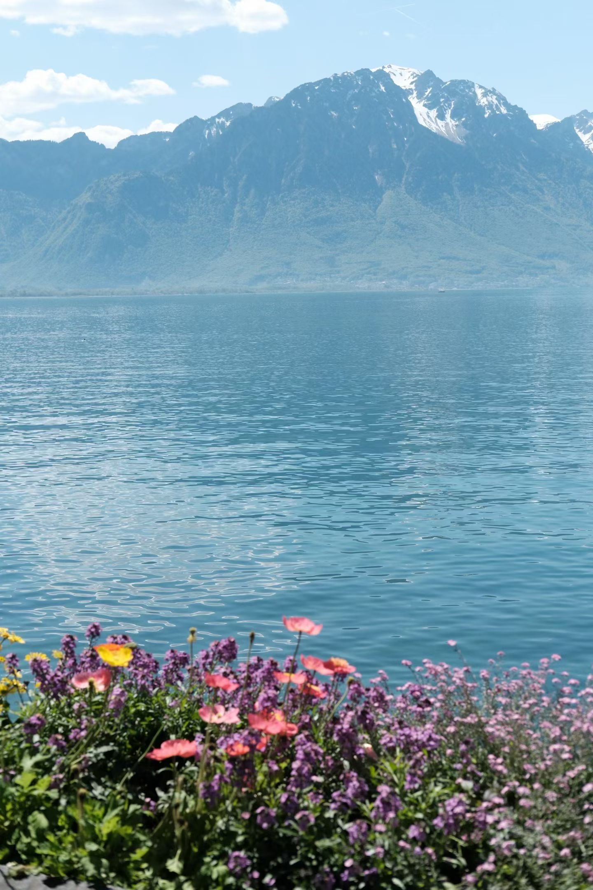
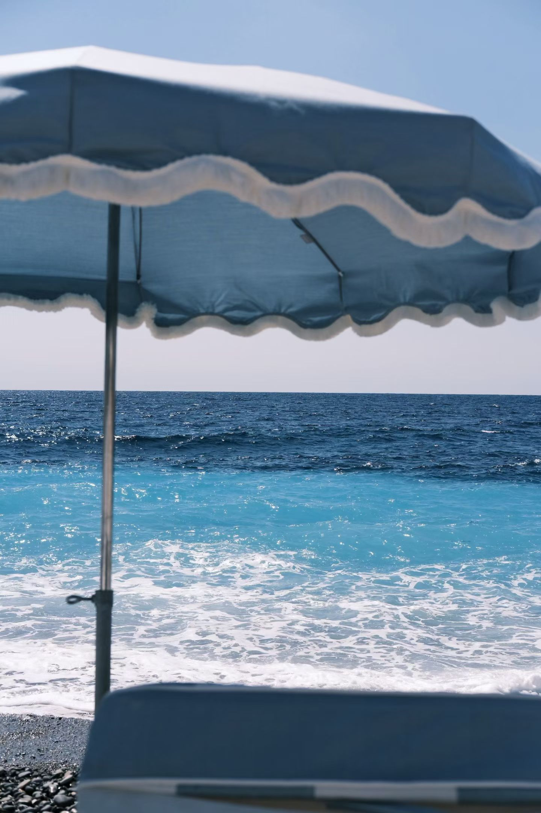
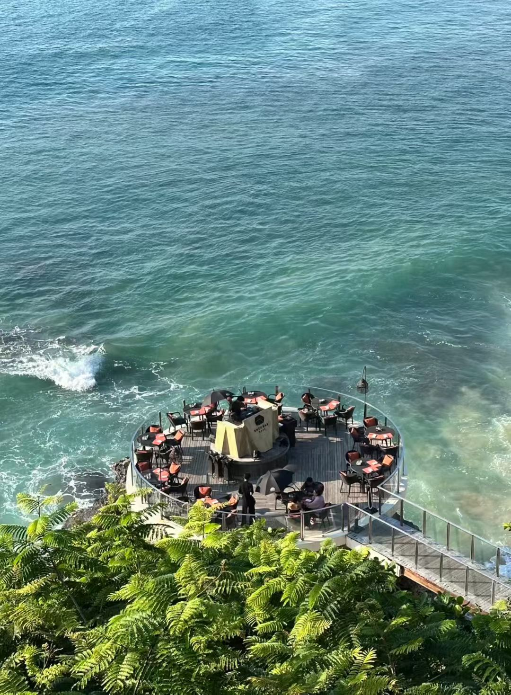
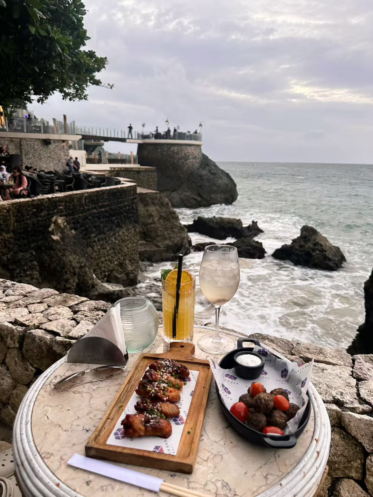
Each passing year brings joy, creating the ebb and flow of life.
Entering this blue fairyland, everything is beautiful, and life is also romantic.
The best travel is when you find a long-lost emotion in a strange place.
The answer lies on the road,
freedom is in the wind,
and the wind blows you to read the page you should.